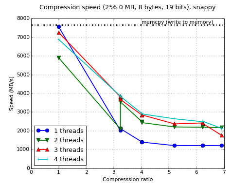
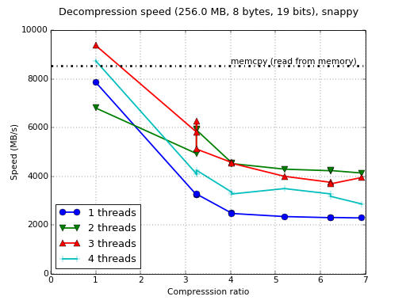

Benchmarks for Snappy Processor model: Intel Core i5 i5-3380M (2 x 2.9 GHZ) 3 MB Cache Compiler: GCC version 4.8.2-19ubuntu1 OS: Ubuntu 14.04 3.13.0-29-generic #53-Ubuntu SMP (64 bit) Contributed by: Francesc Alted Suite output (4 threads) 